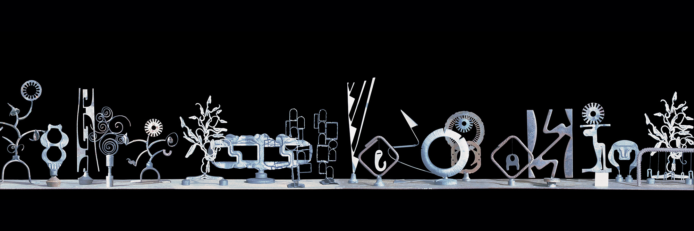
Convento di San Francesco - Pordenone 2007
Wunderkammer
Nella penombra della mostra gli oggetti liberati dalla prima funzione inviano a un
mondo troppo indaffarato la loro profezia.
Suscitano orizzonti le multiformi variazioni con cui a ciascuno è dato espandere la
propria unicità, inducono una pedagogia universale, a disposizione di tutti.


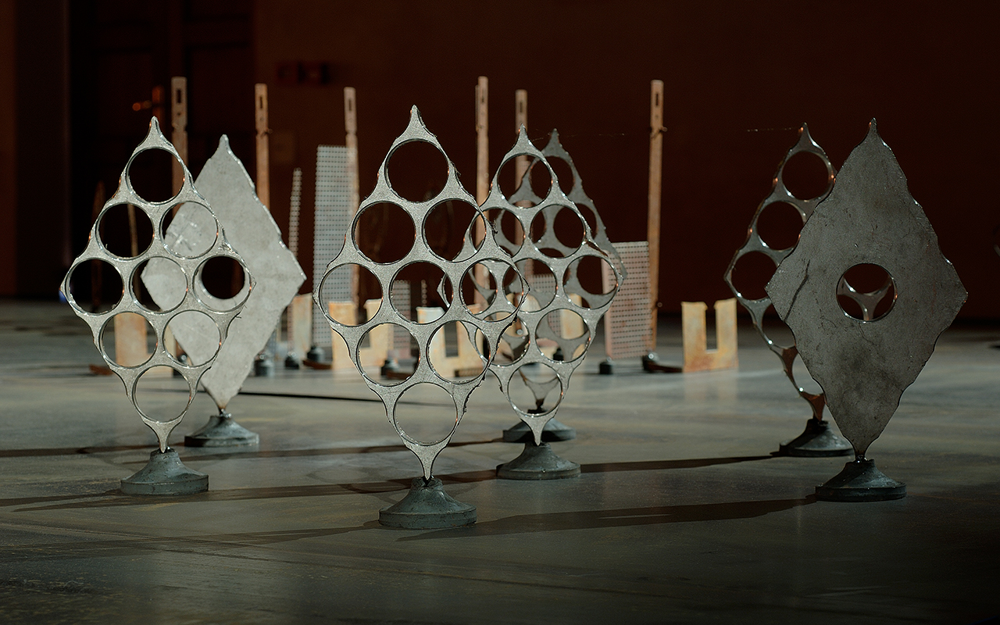
Nelle figure schierate o in qualche accennato impulso alla danza ciascuno può riconoscere una possibilità che lo riguarda.
L’insieme genera un ritmo, basta scorrere lo sguardo dai tondi agli acuti, dal morbido all’aspro, da alberelli congelati a piccoli pesci sospesi e dondolanti, dalle evoluzioni di una rondella al gesto perentorio di una lancia.
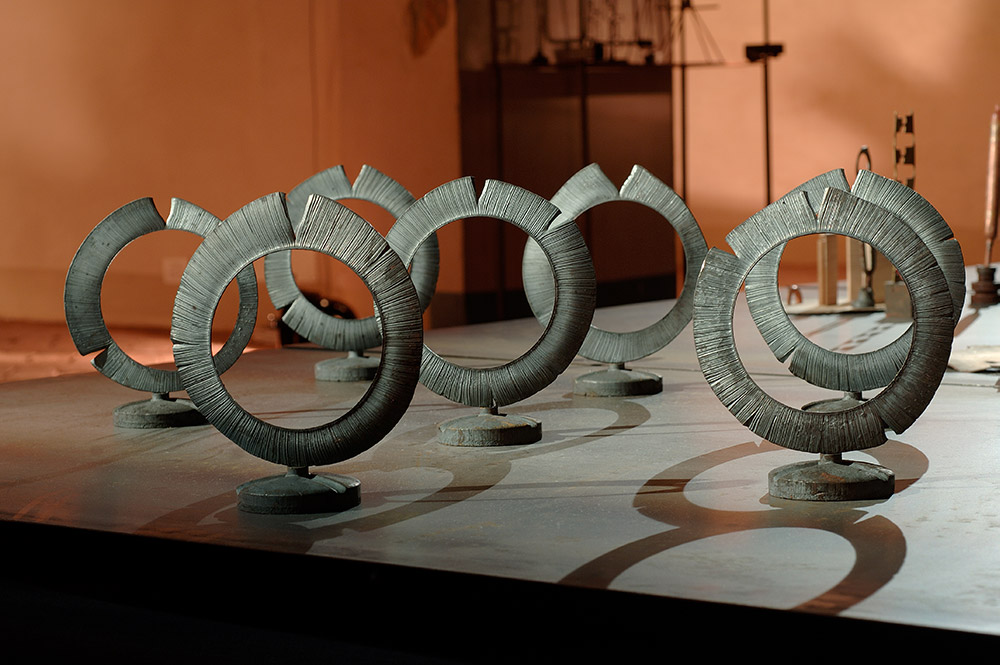
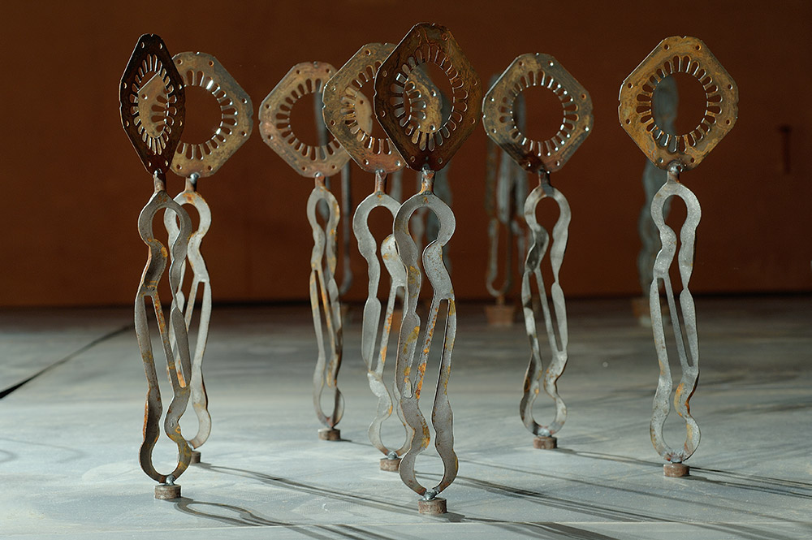
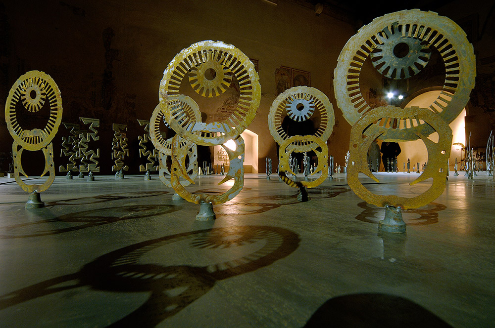
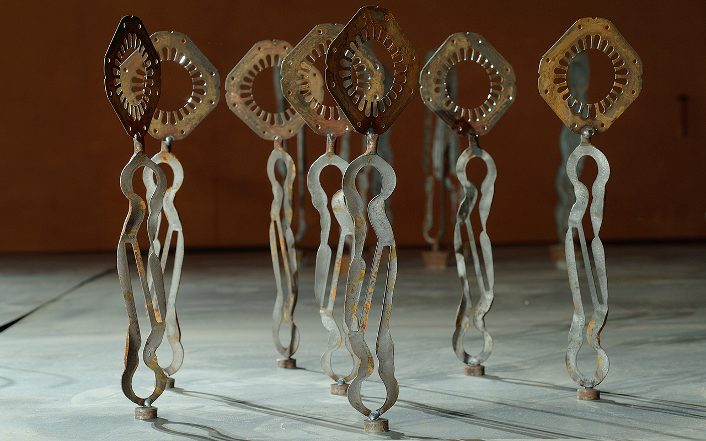
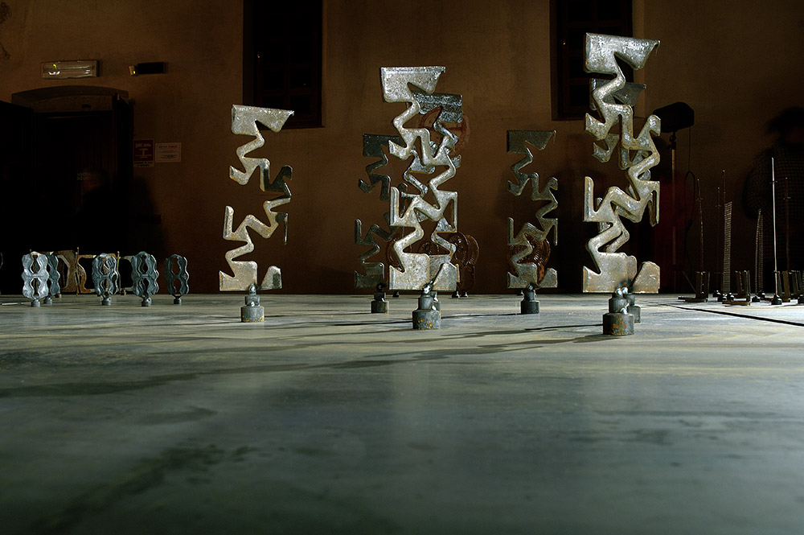
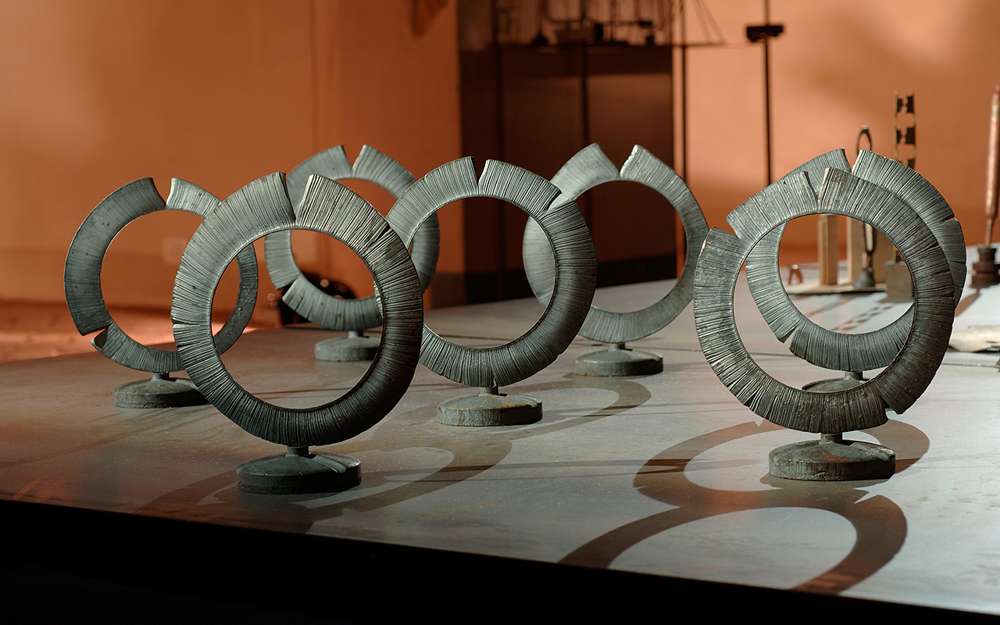
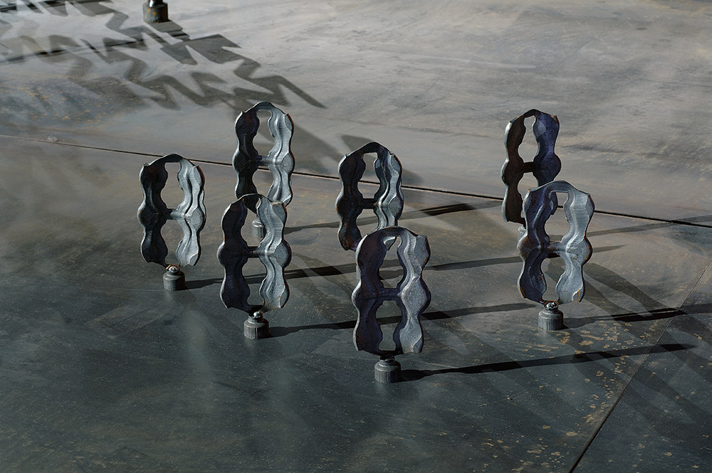
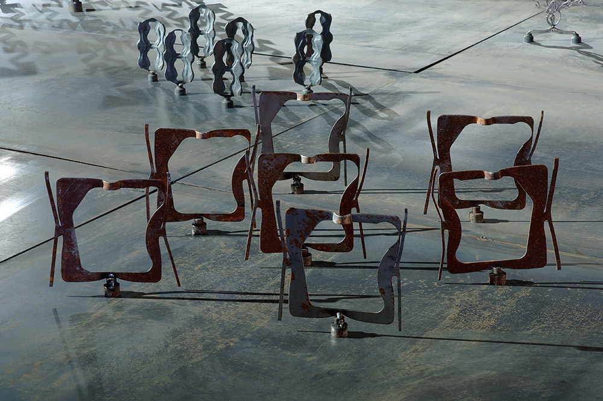
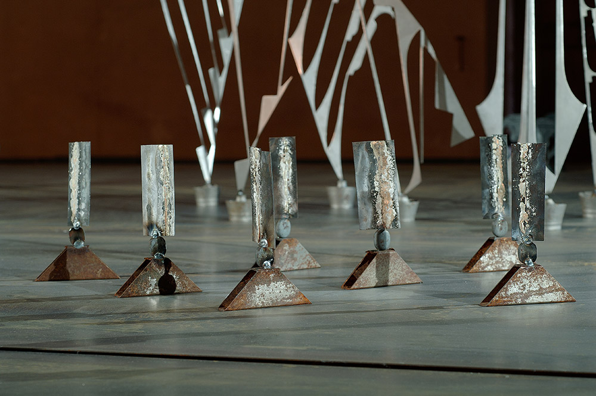
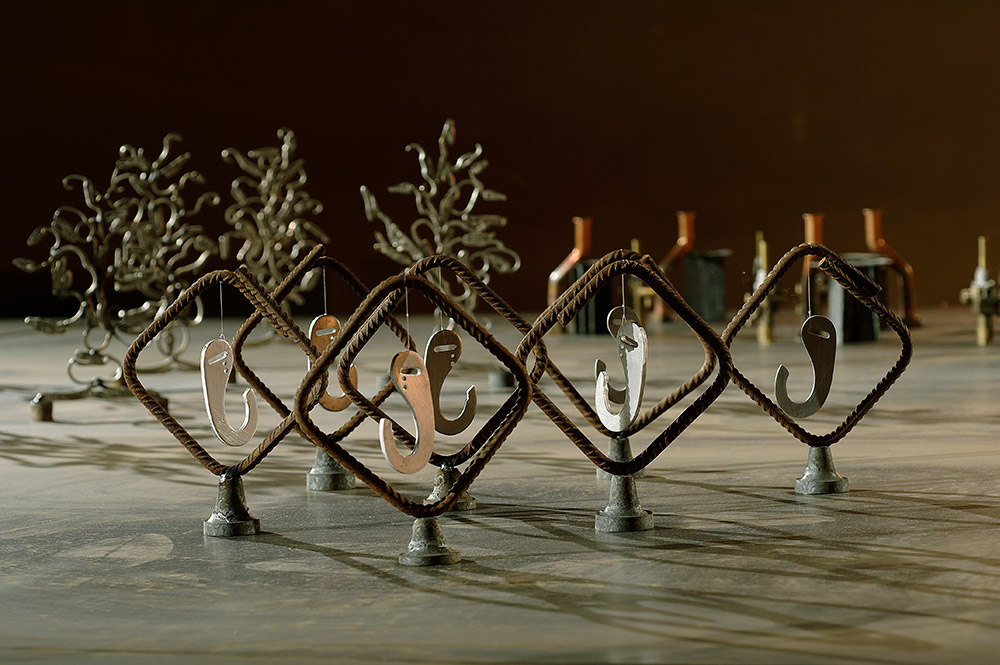
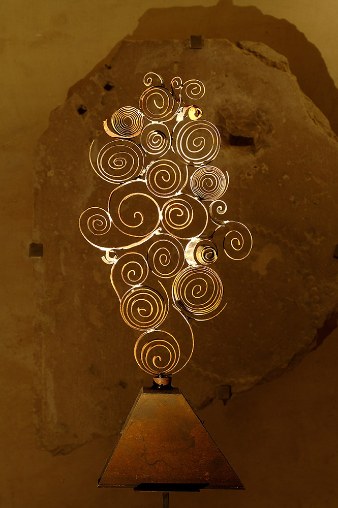
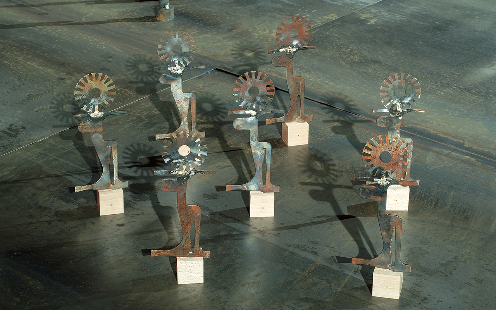

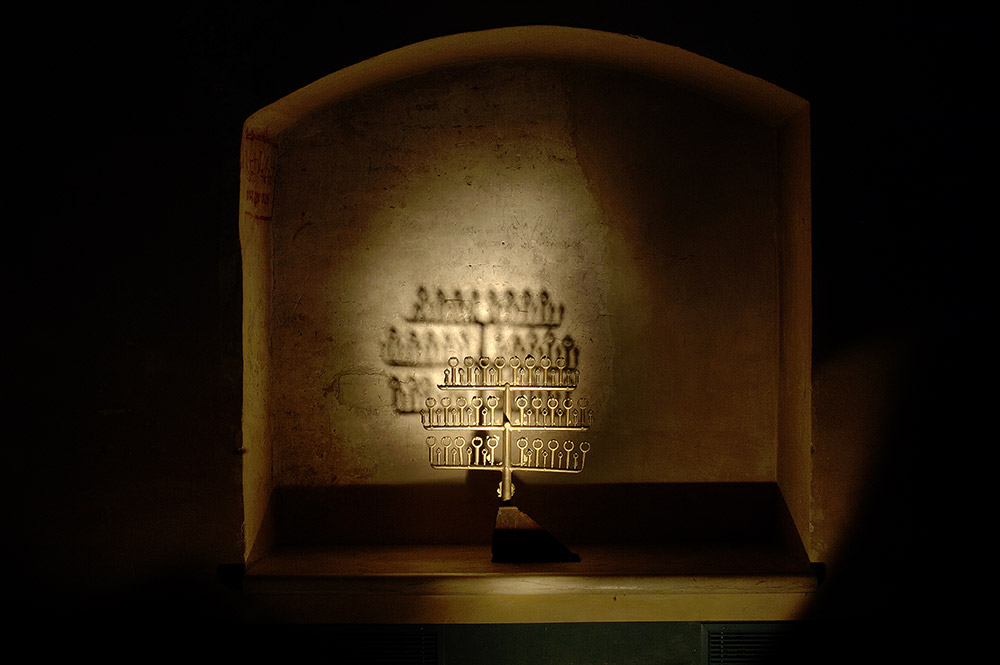
Piccole coreografie o drappelli temibili di guerrieri sanniti recuperano forza insieme all’anima scarnificata di un mucchietto di grattacieli nello stile di Manhattan.
Qualcuno è sullo sfondo, forse trepidante, che le sue creature mantengano la posizione, che non le facciano fare brutta figura in questa recita di riscatto e trasfigurazione.
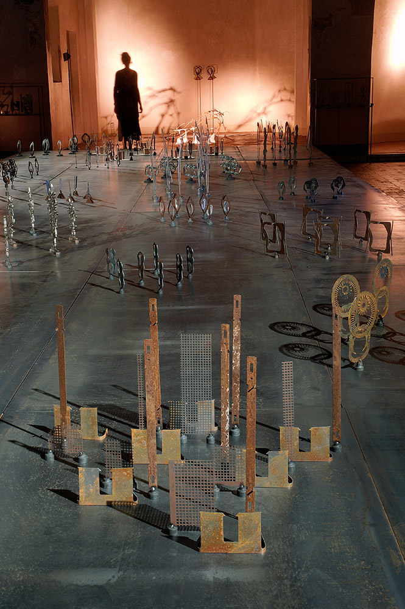